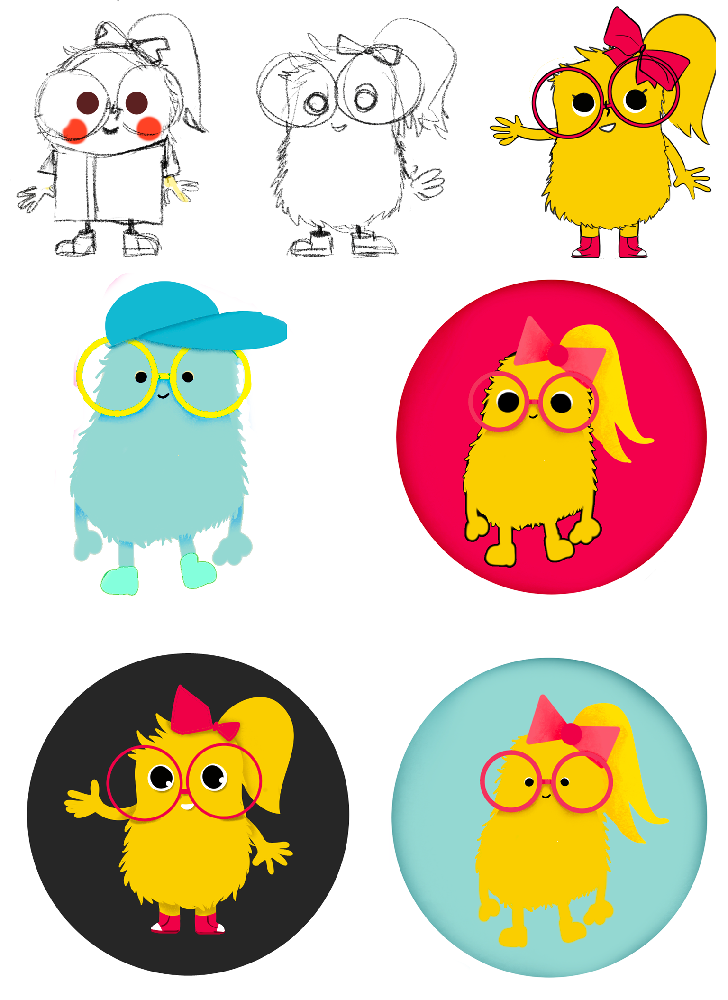
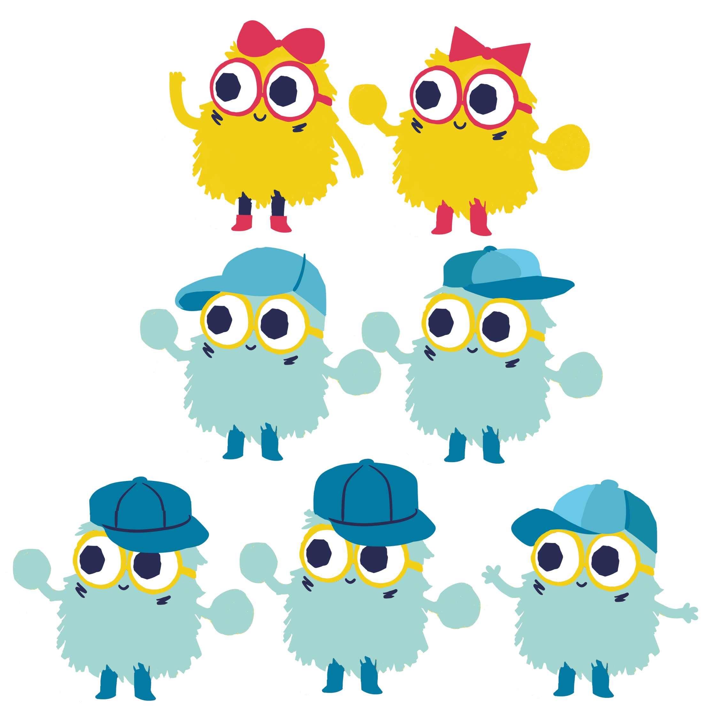
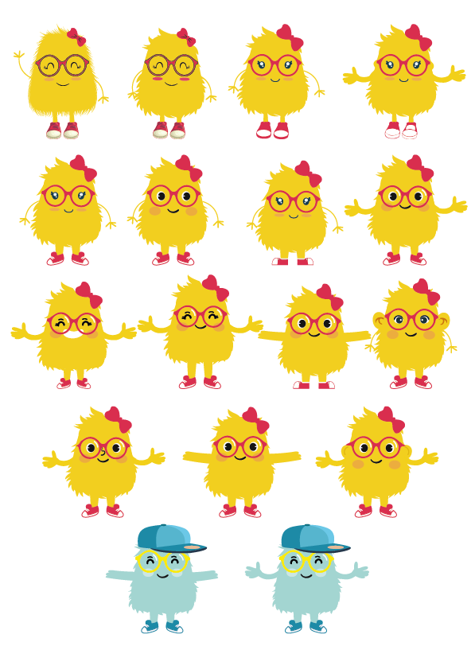
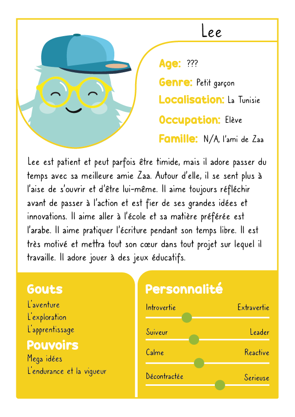
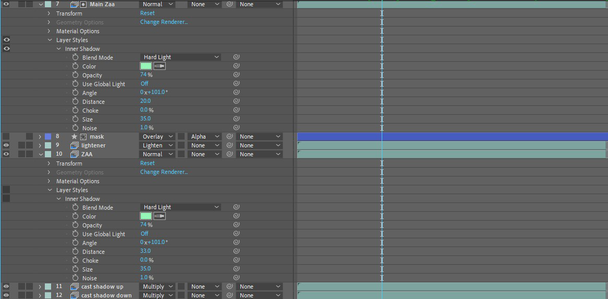
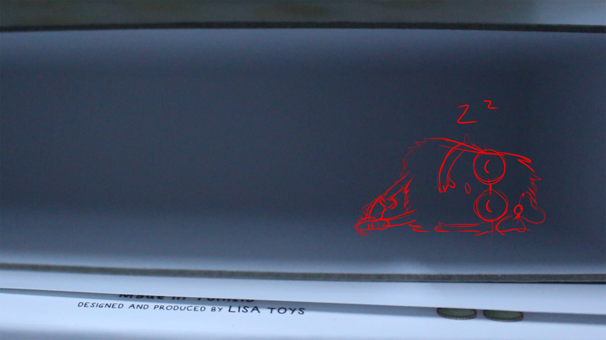
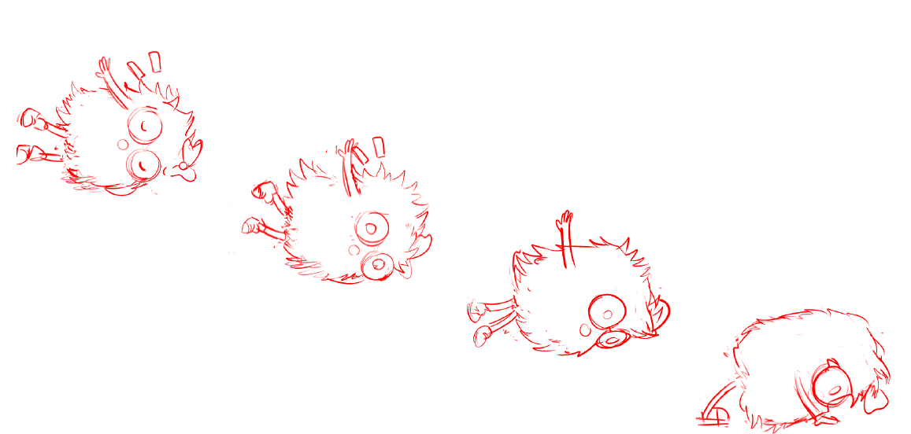

Conçu pour : Projet de fin de formation - Stage professionnel
Direction artistique : Sabrine Attafi
Le projet se présente sous la forme d’un spot publicitaire dans lequel j’ai utilisé la technique de l’animation 2D sur prises de vues réelles.
Il fallait dans un premier lieu retravailler le design des mascottes.
Outils : Procreate, Adobe Illustrator, TVPaint, Adobe After Effects, Adobe Premiere
=======
Il s’inscrit dans le cadre d’une nouvelle stratégie de communication proposée par M. Ben Mahmoud. Ce projet explore le concept du dessin animé pour la promotion des produits LISA Toys.
Le mélange de prises de vues réelles et de prises de vues image par image met en valeur les interactions des personnages animés avec le monde réel. Dans mon cas, j’espérais intégrer des personnages animés image par image, Lee et Zaa, dans un arrière-plan en prise de vue réelle.
J’ai commencé mes recherches du style artistique en revisitant les jouets et livres de mon enfance. Le but était de retrouver ce qui distinguait ces personnages de ceux des jouets et vidéos produits en masse. Pour synthétiser, j’ai fait un moodboard.
>>>>>>> 089eba184dc07c5f1b7be7861054194700042f48
<<<<<<< HEAD
Petit apercu sur le developpement







×>
×
Schema initial
LISA
=======
En gardant toujours à l’esprit les principes de l’animation, j’ai animé les actions de chaque personnage dans un style brut plan par plan. Selon la complexité de l’action, je pourrais soit animer chaque image dans les moindres détails tout en notant le timing, soit dessiner un image toutes les douzaines d’images environ. J’ai d’abord animé sur 2s, mais j’ai commencé à inclure des animations sur 3s car j’ai remarqué que je pouvais le faire sans perte perceptible de la qualité de l’animation. En réalité, la fluidité perçue d’une animation dépend plus de la qualité du timing que du nombre d’images par seconde.
Yassmine Tissaoui s'intéresse à la place de la diversité dans son travail d'illustration stylisé, qu’iel utilise pour explorer des concepts de beauté non conventionnelle.
Ayant obtenu son BTS en infographie et multimédia , iel a acquis une clarté et une compréhension de l'industrie du design et cherche à utiliser ses vastes compétences pour sensibiliser aux problèmes sociaux et écologiques importants. Elle pense qu'iel est important d'utiliser sa compréhension du marketing pour sensibiliser le public et d’utiliser son art pour rendre le monde plus agréable. Iel est étudiant-e en deuxième année de design graphique à Boulogne-Billancourt, plus précisément au DNMADe Graphisme Augmenté du lycée Jacques-Prévert.
Iel apprécie l’art dans toutes ses formes, plutôt préoccupé-e par le sentiment et le message derrière lui que son support. Les photographies de Nan Goldin, les peintures de Liu Xiaodong et les illustrations de Junji Ito ont toutes joué un rôle formatif dans son parcours graphique.
Iel a développé un grand intérêt pour le motion design et l'art séquentiel. Outre l’art, ses intérêts incluent la lecture, le crochet, et le yoga. Iel a toujours aimé la littérature d'horreur et de mystère et cherche toujours des auteurs divers et uniques. Iel est aussi une joueuse de jeux vidéo de longue date.
ContactInstagramLinkedInCVNotre section
=======
Yassmine Tissaoui s'intéresse à la place de la diversité dans son travail d'illustration stylisé, qu’iel utilise pour explorer des concepts de beauté non conventionnelle.
Ayant obtenu son BTS en infographie et multimédia , iel a acquis une clarté et une compréhension de l'industrie du design et cherche à utiliser ses vastes compétences pour sensibiliser aux problèmes sociaux et écologiques importants. Elle pense qu'iel est important d'utiliser sa compréhension du marketing pour sensibiliser le public et d’utiliser son art pour rendre le monde plus agréable. Iel est étudiant-e en deuxième année de design graphique à Boulogne-Billancourt, plus précisément au DNMADe Graphisme Augmenté du lycée Jacques-Prévert.
Iel apprécie l’art dans toutes ses formes, plutôt préoccupé-e par le sentiment et le message derrière lui que son support. Les photographies de Nan Goldin, les peintures de Liu Xiaodong et les illustrations de Junji Ito ont toutes joué un rôle formatif dans son parcours graphique.
Iel a développé un grand intérêt pour le motion design et l'art séquentiel. Outre l’art, ses intérêts incluent la lecture, le crochet, et le yoga. Iel a toujours aimé la littérature d'horreur et de mystère et cherche toujours des auteurs divers et uniques. Iel est aussi une joueuse de jeux vidéo de longue date.
! ContactInstagramLinkedInCVNotre section